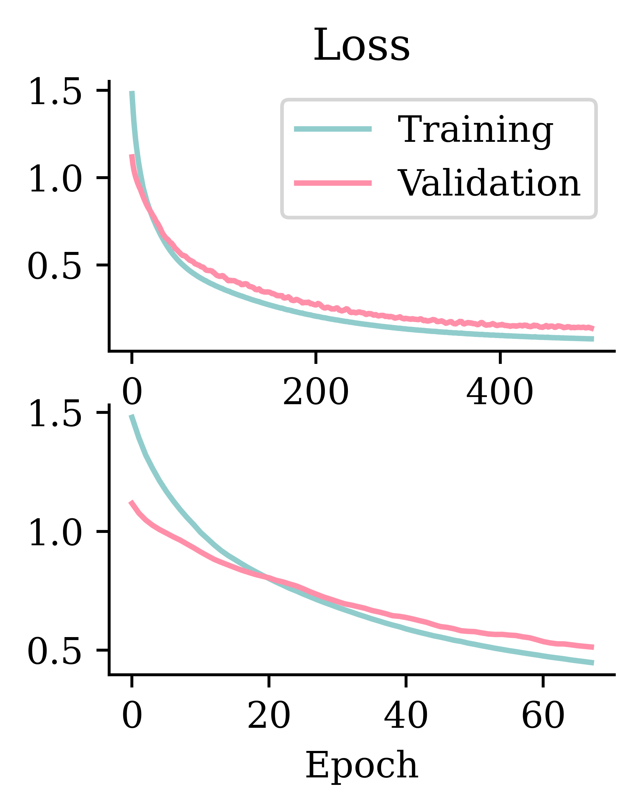
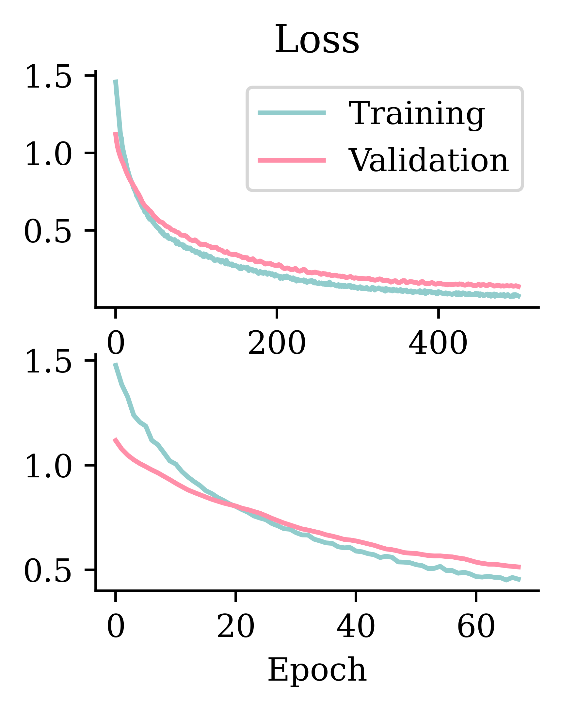
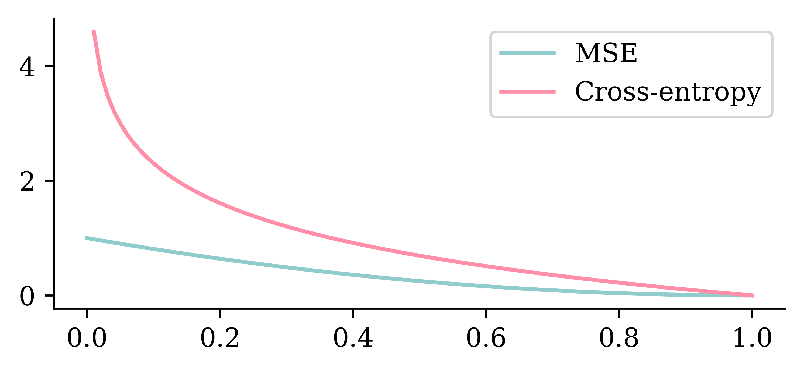

A basic network for classifying into three categories.
Since the task is a classification problem, we use softmax activation function. The softmax function takes in the input and returns a probability vector, which tells us about the probability of a data point belonging to a certain class.
Create a classifier model
NUM_FEATURES =len(features.columns)NUM_CATS =len(np.unique(target))print("Number of features:", NUM_FEATURES)print("Number of categories:", NUM_CATS)
2024-05-31 13:28:57.062075: E external/local_xla/xla/stream_executor/cuda/cuda_driver.cc:282] failed call to cuInit: CUDA_ERROR_NO_DEVICE: no CUDA-capable device is detected
2024-05-31 13:28:57.062235: I external/local_xla/xla/stream_executor/cuda/cuda_diagnostics.cc:134] retrieving CUDA diagnostic information for host: luthen
2024-05-31 13:28:57.062240: I external/local_xla/xla/stream_executor/cuda/cuda_diagnostics.cc:141] hostname: luthen
2024-05-31 13:28:57.062320: I external/local_xla/xla/stream_executor/cuda/cuda_diagnostics.cc:165] libcuda reported version is: 535.171.4
2024-05-31 13:28:57.062341: I external/local_xla/xla/stream_executor/cuda/cuda_diagnostics.cc:169] kernel reported version is: 535.171.4
2024-05-31 13:28:57.062344: I external/local_xla/xla/stream_executor/cuda/cuda_diagnostics.cc:248] kernel version seems to match DSO: 535.171.4
Since the problem at hand is a classification problem, we define the optimizer and loss function accordingly. Optimizer is adam and the loss function is sparse_categorical_crossentropy. If the response variable represents the category directly using an integer (i.e. if the response variable is not one-hot encoded), we must use sparse_categorical_crossentropy. If the response variable (y label) is already one-hot encoded we can use categorical_crossentropy.
Track accuracy as the model trains
model = build_model()model.compile("adam", "sparse_categorical_crossentropy", \ metrics=["accuracy"])model.fit(X_train, y_train, epochs=5, verbose=2);
We can also specify which loss metric to monitor in assessing the performance during the training. The metric that is usually used in classification tasks is accuracy, which tracks the fraction of all predictions which identified the class accurately. The metrics are not used for optimizing. They are only used to keep track of how well the model is performing during the optimization. By setting verbose=2, we are printing the progress during training, and we can see how the loss is reducing and accuracy is improving.
CPU times: user 3.4 s, sys: 305 ms, total: 3.71 s
Wall time: 8.06 s
Stopped after 68 epochs.
Defines a new model with the same architecture as model_build which is already constructed
Compiles the model with optimizer, loss function and metric
Defines the early stopping object as usual, with one slight change. The code is specified to activate the early stopping by monitoring the validation accuracy (val_accuracy), not the loss.
Fits the model
Evaluation on test set:
model.evaluate(X_test, y_test, verbose=False)
[0.9856260418891907, 0.5263158082962036]
Fitting metrics


Left hand side plots show how loss behaved without and with early stopping. Right hand side plots show how accuracy performed without and with early stopping.
What is the softmax activation?
It creates a “probability” vector: \text{Softmax}(\boldsymbol{x}) = \frac{\mathrm{e}^x_i}{\sum_j \mathrm{e}^x_j} \,.
In NumPy:
out = np.array([5, -1, 6])(np.exp(out) / np.exp(out).sum()).round(3)
array([0.269, 0.001, 0.731])
In Keras:
out = keras.ops.convert_to_tensor([[5.0, -1.0, 6.0]])keras.ops.round(keras.ops.softmax(out), 3)
The response variable y is an array of numeric integers, each representing a class to which the data belongs. However, the model.predict() function returns an array with probabilities not an array with integers. The array displays the probabilities of belonging to each category.
p = np.linspace(0, 1, 100)plt.plot(p, (1-p)**2)plt.plot(p, -np.log(p))plt.legend(["MSE", "Cross-entropy"]);
/tmp/ipykernel_974216/2228567616.py:3: RuntimeWarning: divide by zero encountered in log
plt.plot(p, -np.log(p))

The above plot shows how MSE and cross-entropy penalize wrong predictions. The x-axis indicates the severity of misclassification. Suppose the neural network predicted that there is near-zero probability of an observation being in class “1” when the actual class is “1”. This represents a strong misclassification. The above graph shows how MSE does not impose heavy penalties for the misclassifications near zero. It displays a linear increment across the severity of misclassification. On the other hand, cross-entropy penalises bad predictions strongly. Also, the misclassification penalty grows exponentially. This makes cross entropy more suitable.
One-hot encoding
from sklearn.preprocessing import OneHotEncoderenc = OneHotEncoder(sparse_output=False)y_train_oh = enc.fit_transform(y_train)y_test_oh = enc.transform(y_test)
y_train[:5]
array([[1],
[1],
[1],
[0],
[0]])
y_train_oh[:5]
x0_0
x0_1
x0_2
0
0.0
1.0
0.0
1
0.0
1.0
0.0
2
0.0
1.0
0.0
3
1.0
0.0
0.0
4
1.0
0.0
0.0
Classifier given one-hot outputs
Create the model (new loss function):
model = build_model()model.compile("adam", "categorical_crossentropy", \ metrics=["accuracy"])
from sklearn.pipeline import make_pipelinecat_vars = ["gender", "ever_married", "Residence_type","work_type", "smoking_status"] ct = make_column_transformer( (OneHotEncoder(sparse_output=False, handle_unknown="ignore"), cat_vars), ("passthrough", ["hypertension", "heart_disease"]), remainder=make_pipeline(SimpleImputer(), StandardScaler()), verbose_feature_names_out=False)X_train_ct = ct.fit_transform(X_train)X_val_ct = ct.transform(X_val)X_test_ct = ct.transform(X_test)for name, X inzip(("train", "val", "test"), (X_train_ct, X_val_ct, X_test_ct)): num_na = X.isna().sum().sum()print(f"The {name} set has shape {X_train_ct.shape} & with {num_na} NAs.")
The train set has shape (3066, 20) & with 0 NAs.
The val set has shape (3066, 20) & with 0 NAs.
The test set has shape (3066, 20) & with 0 NAs.
Imports make_pipeline class from sklearn.pipeline library. make_pipeline is used to streamline the data pre processing. In the above example, make_pipeline is used to first treat for missing values and then scale numerical values
Stores categorical variables in cat_vars
Specifies the one-hot encoding for all categorical variables. We set the sparse_output=False, to return a dense array rather than a sparse matrix. handle_unknown specifies how the neural network should handle unseen categories. By setting handle_unknown="ignore", we instruct the neural network to ignore categories that were not seen during training. If we did not do this, it will interrupt the model’s operation after deployment
Passes through hypertension and heart_disease without any pre processing
Makes a pipeline that first applies SimpleImputer() to replace missing values with the mean and then applies StandardScaler() to scale the numerical values
Prints out the missing values to ensure the SimpleImputer() has worked
Handling unseen categories
X_train["gender"].value_counts()
gender
Female 1802
Male 1264
Name: count, dtype: int64
X_val["gender"].value_counts()
gender
Female 615
Male 406
Other 1
Name: count, dtype: int64
Because the way train and test was split, one-hot encoder could not pick up on the third category. This could interrupt the model performance. To avoid such confusions, we could either give instructions manually on how to tackle unseen categories. An example is given below.
ind = np.argmax(X_val["gender"] =="Other")X_val.iloc[ind-1:ind+3][["gender"]]
However, to give such instructions on handling unseen categories, we would first have to know what those possible categories could be. We should also have specific knowledge on what value to assign in case they come up during model performance. One easy way to tackle it would be to use handle_unknown="ignore" during encoding, as mentioned before.
Setup a binary classification model
def create_model(seed=42): random.seed(seed) model = Sequential() model.add(Input(X_train_ct.shape[1:])) model.add(Dense(32, "leaky_relu")) model.add(Dense(16, "leaky_relu")) model.add(Dense(1, "sigmoid"))return model
Since this is a binary classification problem, we use the sigmoid activation function.
Epoch 65: early stopping
Restoring model weights from the end of the best epoch: 15.
Brings in the created model
Creates an instance pr_auc to store the AUC (Area Under Curve) metric for the PR (Precision-Recall) curve
Compiles the model with an appropriate loss function, optimizer and relevant metrics. Since the above problem is a binary classification, we would optimize the binary_crossentropy, chose to monitor both accuracy and AUC and pr_auc.
Tracking AUC and pr_auc on top of the accuracy is important, particularly in the cases where there is a class imbalance. Suppose a data has 95% True class and only 5% False class, then, even a random classifier that predicts True 95% of the time will have a high accuracy. To avoid such issues, it is advisable to monitor both accuracy and AUC.
Epoch 74: early stopping
Restoring model weights from the end of the best epoch: 24.
Another way to treat class imbalance would be to assign a higher weight to the minority class during model fitting. 1. Fits the model by assigning a higher weight to the misclassification in the minor class. This above class weight assignment says that misclassifying an observation from class 1 will be penalized 10 times more than misclassifying an observation from class 0. The weights can be assigned in relation to the level of data imbalance.